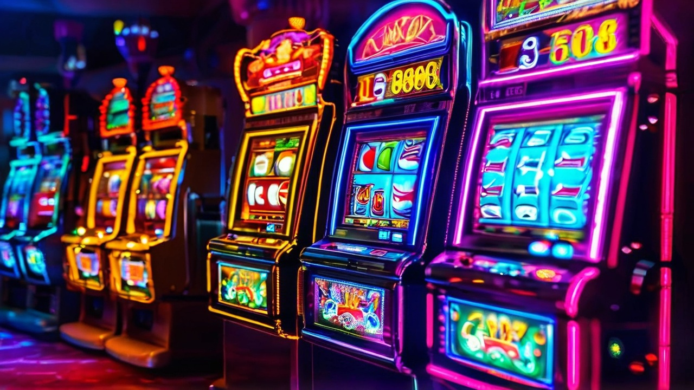

O Weiss Casino, também conhecido como Weiss Bet, tem conquistado cada vez mais jogadores portugueses com sua plataforma inovadora e benefícios exclusivos. Entre as vantagens oferecidas, o sistema de cashback destaca-se como uma das características mais atrativas para os entusiastas de jogos de casino online. Neste artigo, vamos explorar em detalhes como funciona o cashback no Weiss Casino e como você pode aproveitar ao máximo este benefício.
 Ativar BónusAntes de mergulharmos nas especificidades do Weiss Bet Casino, é importante entender o conceito de cashback no universo dos casinos online. Essencialmente, o cashback é um programa de recompensas que devolve ao jogador uma percentagem do dinheiro perdido durante um determinado período. Esta prática serve como uma rede de segurança, permitindo que os jogadores recuperem parte de suas perdas e prolonguem sua experiência de jogo.
O Weiss Casino implementou um sistema de cashback projetado para beneficiar seus jogadores regulares. Aqui estão os principais aspectos deste programa:
O Weiss Bet oferece uma percentagem competitiva de cashback, que pode variar dependendo do status do jogador na plataforma. Geralmente, esta percentagem oscila entre 5% e 15% das perdas líquidas do jogador.
O cashback no Weiss Casino é calculado semanalmente. Isto significa que as perdas são contabilizadas de segunda a domingo, com o valor do cashback sendo creditado na conta do jogador na segunda-feira seguinte.
Para ser elegível ao cashback, o jogador deve ter um saldo negativo no final do período semanal. Além disso, é necessário ter realizado um depósito mínimo durante a semana em questão. O valor exato deste depósito mínimo pode variar, por isso é recomendável verificar os termos e condições atualizados no site oficial do Weiss Casino.
Para tirar o máximo proveito do sistema de cashback do Weiss Casino, considere as seguintes estratégias:
O Weiss Casino oferece uma ampla gama de jogos de casino que contribuem para o cálculo do cashback. Estes incluem:
É importante notar que alguns jogos podem contribuir com percentagens diferentes para o cálculo do cashback. Por exemplo, as slots geralmente contribuem 100%, enquanto jogos de mesa podem ter uma percentagem menor.
O sistema de cashback do Weiss Bet Casino oferece várias vantagens aos jogadores:
O cashback atua como uma rede de segurança, minimizando as perdas potenciais e permitindo que os jogadores explorem diferentes jogos e estratégias com maior confiança.
Ao receber uma parte de suas perdas de volta, os jogadores podem estender seu tempo de jogo, aumentando suas chances de ganhos futuros.
O programa de cashback incentiva os jogadores a permanecerem fiéis ao Weiss Casino, recompensando-os por sua atividade contínua na plataforma.
O processo de recebimento e utilização do cashback no Weiss Casino é simples e direto:
O valor do cashback é automaticamente creditado na conta do jogador toda segunda-feira, desde que os requisitos de elegibilidade tenham sido atendidos.
Uma das grandes vantagens do cashback no Weiss Bet é que ele geralmente não está sujeito a requisitos de aposta. Isso significa que você pode sacar o valor do cashback imediatamente ou usá-lo para jogar mais.
O Weiss Casino envia notificações aos jogadores elegíveis informando sobre o crédito do cashback. É recomendável manter suas informações de contato atualizadas para não perder estas notificações importantes.
Ao comparar o sistema de cashback do Weiss Casino com outros casinos online, alguns pontos se destacam:
A percentagem de cashback oferecida pelo Weiss Bet está entre as mais competitivas do mercado, especialmente para jogadores regulares.
O pagamento semanal do cashback é um diferencial, pois muitos casinos oferecem este benefício apenas mensalmente.
A ausência de requisitos de aposta para o cashback coloca o Weiss Casino em vantagem em relação a muitos concorrentes que impõem condições mais restritivas.
Para otimizar sua experiência com o cashback no Weiss Casino, considere as seguintes dicas:
Fique atento às atualizações e promoções especiais do Weiss Bet que podem afetar o cashback. As condições podem mudar, e estar informado é crucial para maximizar seus benefícios.
Estabeleça um orçamento semanal para seus jogos e adira a ele. Isso não só ajuda a controlar suas perdas, mas também garante que você permaneça elegível para o cashback de forma consistente.
Experimente diversos jogos de casino oferecidos pelo Weiss Bet. Isso não apenas torna sua experiência mais divertida, mas também pode ajudar a otimizar seu cashback, já que diferentes jogos podem contribuir de maneira distinta para o cálculo.
O Weiss Casino está constantemente evoluindo para oferecer a melhor experiência possível aos seus jogadores. É provável que o sistema de cashback continue a ser aprimorado, possivelmente com a introdução de níveis de recompensa mais personalizados ou integração com outros programas de fidelidade.
Em conclusão, o sistema de cashback do Weiss Bet Casino representa uma vantagem significativa para os jogadores portugueses. Ao compreender como funciona e implementar estratégias inteligentes, os entusiastas de jogos de casino online podem maximizar seus benefícios e desfrutar de uma experiência de jogo mais prolongada e gratificante. Lembre-se sempre de jogar de forma responsável e aproveitar o cashback como um bónus, não como uma garantia de ganhos.